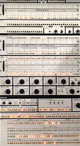
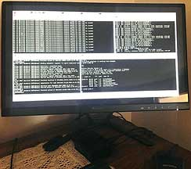

Loading
(03/22/26) Eric Swenson has added Chaosnet support to the Multics simulator. Currently there are several dozen active hosts on the Chaosnet all around the world. Eric is preparing a writeup.
(05/14/25)
Jeffrey Johnson:  DPS8M Simulator Release 3.1.0 was released,
adding a few new features,
improving platform support,
fixing many bugs,
and offering greatly improved performance for most users.
See the
DPS8M Simulator Release 3.1.0 was released,
adding a few new features,
improving platform support,
fixing many bugs,
and offering greatly improved performance for most users.
See the  Release Notes.
Release Notes.
To install the DPS8 Simulator and the latest Multics on your machine, see Eric Swenson's  Getting Started, Wiki page.
This has the steps for installing the simulator on your machine, and installing Multics software, compilers, system source, install scripts,
and several initial projects (SysDaemon, SysAdmin, Daemon, etc.) and users.
Getting Started, Wiki page.
This has the steps for installing the simulator on your machine, and installing Multics software, compilers, system source, install scripts,
and several initial projects (SysDaemon, SysAdmin, Daemon, etc.) and users.
For more simulator information, see  DPS8M home page, gitlab page and
DPS8M home page, gitlab page and  Multics Simulator Frequently Asked Questions, Wiki page.
Multics Simulator Frequently Asked Questions, Wiki page.
(05/17/25)
Thanks to recent hard work by Eric Swenson and Dean Anderson,
considerable progress has been made in using the Multics GCOS subsystem,
including batch operation via punched card decks.
Eric Swenson and Jeffrey Johnson have been working on documenting all
the GCOS related things at on the  Multics Wiki.
Multics Wiki.
(04/25/24)
Jeffrey Johnson has created a  browser for the Multics source for MR12.8 in GitLab.
browser for the Multics source for MR12.8 in GitLab.
(01/16/24) Harry Reed died on Jan 11, 2024. The Multics Simulator he and Charles Anthony created became a wonderful gift to Multicians everywhere.
(08/18/23) Multics Release 12.8 is now available for use on the DPS8M simulator, with 80 bug fixes. Eric Swenson is the release coordinator. Changes are discussed on dps8m-users, dps8m-developers, and on Multicians@groups.io.
(08/11/23)
 DPS8M Simulator Release 3.0.1 was released.
See the
DPS8M Simulator Release 3.0.1 was released.
See the  Release Notes.
Release Notes.
Eric Swenson documented Software Development Procedures for the Multics Simulator
for those who wish to submit bug fixes and changes to Multics for the simulator environment.
Designs are described in Multics Technical Bulletins (MTBs).
An index is at  Post-Honeywell MTBs, MTBs since 2015.
Post-Honeywell MTBs, MTBs since 2015.
Changes are proposed and documented in Multics Change Requests.
An index is at  Post-Honeywell MCRs, MCRs since 2015.
Post-Honeywell MCRs, MCRs since 2015.
(11/23/22)
 DPS8M Simulator Release 3.0 was released.
See the
DPS8M Simulator Release 3.0 was released.
See the  Release Notes.
Release Notes.
(08/27/19)
 DPS8M Simulator Release 2.0 was released.
DPS8M Simulator Release 2.0 was released.
(05/25/17)
 DPS8M Simulator Release 1.0 was released.
DPS8M Simulator Release 1.0 was released.
(08/10/14) Simulated Honeywell Multics hardware is available for Windows, Linux/Unix, and macOS. The Multics DPS8-M CPU simulator created by Harry Reed and Charles Anthony is available for public download. It simulates an entire Multics mainframe system, with multiple CPUs, I/O controllers, Network Processors, and peripherals. The simulator can run on AIX, FreeBSD, NetBSD, OpenBSD, DragonFly BSD, Haiku, illumos OpenIndiana, QNX, OS/400 (PASE for IBM i), Android, SerenityOS, Linux, macOS, Solaris, and Windows. The simulator is open source, available on GitLab.
Mailing Lists
There are mailing lists at SourceForge for developers and users:
(Sign up at https://sourceforge.net/p/dps8m/mailman/)
dps8m-users: https://sourceforge.net/p/dps8m/mailman/dps8m-users/
dps8m-developers: https://sourceforge.net/p/dps8m/mailman/dps8m-developers/
Public Access Multics at Gold Hill Multics
(04/27/23) You can request a Multics account on the simulated Gold Hill Multics by sending mail to Eric Swenson. This site is always running the latest software -- it is the integration site from which he produces new releases of Multics. It is currently running MR12.8.
Public Access Multics at ban.ai
(05/14/23) From 2018 to 2023, Jeffrey Johnson provided a public Multics site running the simulator. The web site ban.ai is currently unavailable, but the simulator is still running (and still has regular users). The following access methods are available:
- Main SSH: multics@connect.ban.ai
- Alt. SSH: m@connect.ban.ai [password: multics]
The alternate SSH method supports SSH clients that require authentication.
What Simulated Multics Can Do
Simulated Multics is a complete multi-user operating system, running on simulated Honeywell DPS8M processors. It can support almost everything the standard release of Multics could ever do -- with the exception of networking.
- Simulated Multics supports multiple languages: PL/I, FORTRAN, COBOL, BCPL, BASIC, APL, LISP, SNOBOL, C, Algol68, and Pascal.
- A simulated Front-End processor lets users log into Multics using a terminal emulator.
- Multiple text editors are provided, including edm, ted, qedx, and Emacs.
- Tape and disk I/O are simulated to host system files.
- It supports the GCOS simulator (batch and time sharing).
- mail and send_message work.
-
The daemons run.
- The simulator will output line printed files as .prt files in a configured directory. There is a program (prt2pdf) available that will convert these .prt files to .pdf files.
- Simulated card input and output are provided.
- It can support multiple (Multics) CPUs running on separate host CPUs, if available.
- The simulator supports autocall (dial out) and slave communication channels, and the ability to "dial out" to host/port on the Internet, or route inbound TCP connections to "slave" channels. It is possible to set up Multics-to-Multics and Multics-to-host connections, including IMFT, Kermit, etc.
A community of developers has contributed bug fixes and enhancements to Multics beyond the last version released by Bull. The operating system and commands have been modified to support dates in the 21st century. Several shared systems have provided stable service for months, shutting down only to install new releases.
Simulator History
The late Harry Reed started a project in 2012 to create a software simulator for the Multics 6180 CPU based on Bob Supnik's  SIMH.
A
SIMH.
A  GitLab repository for the simulator is available.
With major assistance from Charles Anthony, the simulator booted Multics on Saturday 08 November 2014.
It has continued to improve since then, with contributions from several other Multicians,
including Gary Dixon, Eric Swenson, Olin Sibert, and Daiyu Hurst.
GitLab repository for the simulator is available.
With major assistance from Charles Anthony, the simulator booted Multics on Saturday 08 November 2014.
It has continued to improve since then, with contributions from several other Multicians,
including Gary Dixon, Eric Swenson, Olin Sibert, and Daiyu Hurst.
Jeffrey Johnson The current DPS8M code forked from SIMH contains very little in common with any upstream version, and we have excised something like 60-70% of the SIMH code. Future versions of the simulator will be moving away from SIMH completely and no longer include the SCP interface.
Prior Multics simulator projects such as Michael Mondy's provided useful experience and learning.
Public Demonstration 2014
At the ACSAC 30 conference in December 2014, Olin Sibert demonstrated simulated Multics to a distinguished audience. He started the simulator on a Mac laptop, booted Multics, wrote a little PL/I program, compiled it, and ran it. A panel of Multicians discussed "Multics: Before, During, After".

Blinkenlights Exhibit at Living Computer Museum
(2/17/17) Stephen Jones of the former Living Computer Museum in Seattle
posted a  video on YouTube of a real 6180 maintenance panel booting the Multics simulator.
The panel was connected to a Linux machine by a special board.
video on YouTube of a real 6180 maintenance panel booting the Multics simulator.
The panel was connected to a Linux machine by a special board.
Stephen wrote me:
Charles Anthony modified the DPS-8/M simulator code to support the 6180. The panel was put on eBay several years ago and I purchased it. My understanding is that it came from Oakland University. I believe all panels of that system were saved and nothing else. The interface between the simulator, which is running under Linux on intel i7, is serial to a BASYS3 Xilinx that in turn drives two logic boards attached to the panel's wiring harness. All lamps and switches are available to simulator and that includes the scrolls as well. Just about all displays can be achieved at this time (though maybe more later?). The simulator is booted via switches on the front panel set to 024000717200 followed by the initialize button.
The system boots up to idle in just under 2 minutes, which, from what I understand, is blazingly fast. We are reorganizing our 2nd floor exhibit and hope to develop this into an interesting display with an interactive terminal, as well as remote access, at some point in the next few months. We are also *very interested* in hosting Multicians to celebrate Multics sometime this year. More details regarding this to come and we're open to suggestions in terms of significant/convenient dates.
LCM Will Not Re-open
(06/25/24) LCM is closing. Its website is gone. The collection will be auctioned off.
Some of LCM's hardware will be hosted by the  Interim Computer Museum (ICM),
part of
Interim Computer Museum (ICM),
part of  SDF (Super Dimension Fortress) in Tukwila WA, USA.
I am told that the blinkenlights display and the simulated Multics will be part of this.
SDF (Super Dimension Fortress) in Tukwila WA, USA.
I am told that the blinkenlights display and the simulated Multics will be part of this.
Simulated Multics on a Raspberry Pi 2017
(3/10/17) Vince Scarafino sent some nice photos of Multics running on his  Raspberry Pi.
The computer is about the size of a deck of cards. He wrote me:
Raspberry Pi.
The computer is about the size of a deck of cards. He wrote me:
[VFS] I have a Raspberry Pi 2, which has a 900 MHz 32-bit quad-core ARM A7 processor. It has one gigabyte of memory, so the simulator, which uses 270 megabytes of memory, doesn't page. The file system is located on a MicroSD card. My current Linux system has six gigabytes configured.
[VFS] It runs Multics at an approximate half a MIP speed: performance test results. It's probably close to the first Multics processors we got at Ford. When the simulator is able to support multi-threaded virtual processors, I should be able to configure a four processor Multics system and get increased throughput, since the A7 is quad-core. There is a Raspberry Pi 3 available, which has a 64-bit processor, but still comes with a 32-bit operating system. (While there are 64 bit operating systems for the RPi 3 on the market, none are packaged with the Raspberry Pi. If we hear of anyone installing one and running Multics it we would find out the performance implications.) I suspect it provides better performance, but I have no specific information. (Running the simulator on my MacBook Pro creates a Multics machine with approximately 7 mips performance.)
Closeup of the computer. (click for a larger view)

The screen shows the Multics operator console in the upper right and a user login in the lower right. (click for a larger view)
Vintage Computer Faire Northwest Presentation 2018
(05/31/18) Charles Anthony gave an hour-long talk about his history with the DPS8/M simulator on Feb 11, 2018, at the Vintage Computer Festival Pacific Northwest 2018; VCF taped the talk and have put it on YouTube.
Resources
-
 Open Source for Multics as of 2000 is hosted at MIT, courtesy of Bull HN.
Open Source for Multics as of 2000 is hosted at MIT, courtesy of Bull HN.
-
DPS8-M Simulator source code repository, wiki, and forums hosted at GitLab.
You can clone a copy of the repository to your own computer. It is 152 MB on disk.
You can also sign up for several email lists for general discussion and simulator development here.
Multics boot tape images are available, based on DOCKMASTER images from bitsavers.org.
-
Multics Simulator 12.8 How-To, Wiki page can be found on Eric Swenson's Wiki.
This includes the MR12.8_QuickStart.zip and the MR12.8_artifacts.zip archives,
which both include the MR 12.9 boot tape image
and FAQ instructions for using KERMIT.
-
Multics source Release 12.7 GitHub repository from Dan Cross and Doug Wells.
You can clone the repository to have a copy of the entire source of Multics on your own computer. It is 170MB on disk.
This archive was created by Doug using mxload; it replaces Multics archive files with subdirectories.
-
Adam Sampson has created a repository on GitLab with the sources of all releases we've been able to locate.
-
Information about the simulator and how to use it is at RingZero - Multics Reborn.
-
The Multics bibliography points to much additional documentation for Multics.
- manuals are available online, many at bitsavers.org
- 724 Multics Technical Bulletins are available online
- 3161 other papers and books are available